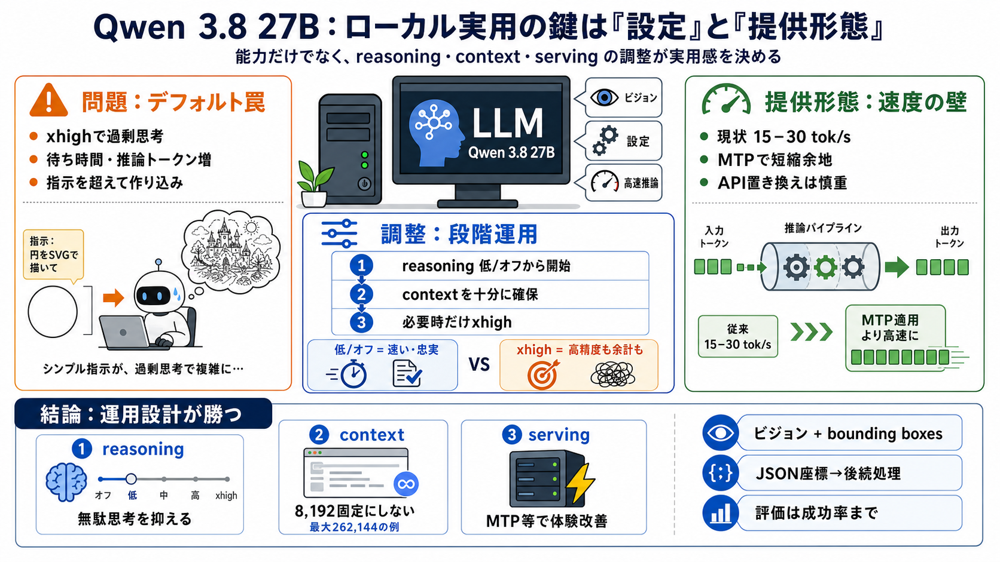

Qwen3.8-27B Benchmarks & Context (August 2026)
| Benchmark | Score | Versus best verified row | Gap | Weight | Evidence | | CharXivCharXiv Reasoning | Score90.2% | Ver…

| Benchmark | Score | Versus best verified row | Gap | Weight | Evidence | | CharXivCharXiv Reasoning | Score90.2% | Ver…
Source: Official Qwen3.8-27B model card (Hugging Face), released August 14, 2026. Benchmarks evaluated using standardize…
## Qwen-reported benchmark results Qwen reports substantial gains over Qwen3.6-27B across coding, agentic work, and mul…
The "27B model beats Claude Opus" framing circulating on Hacker News overstates what the numbers show. Qwen3.8-27B beats…
Based on this tweet from `llama.cpp` creator Georgi Gerganov I tried running the model with MTP like this on the Spark: …